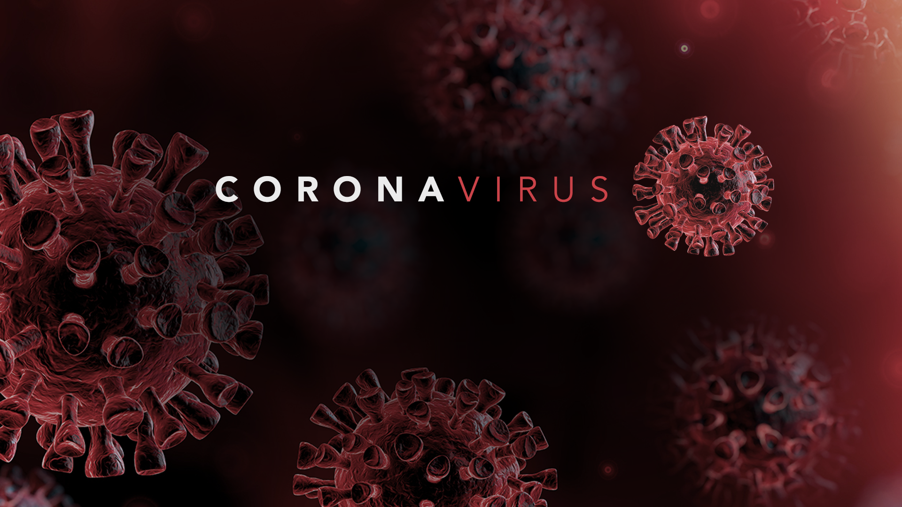
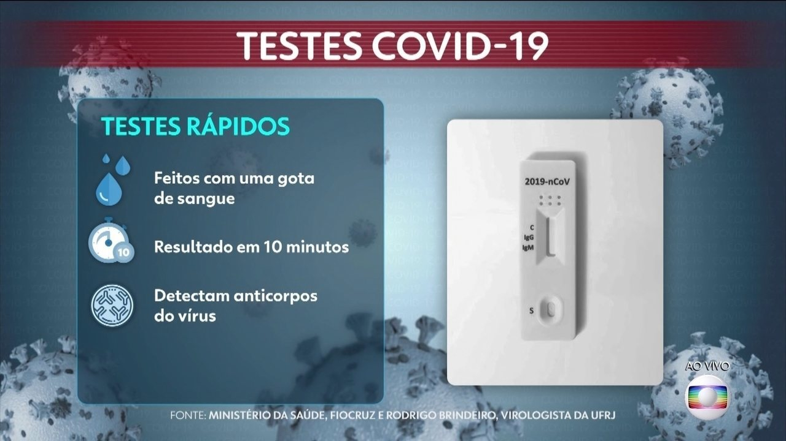

Teste em Massa Covid-19
Caso tenha sintomas que persistem por 3 dias, agenda seu teste.
Agendar teste do SARS-COV-2SARS
O reservatório específico do hospedeiro animal permanece desconhecido, embora os morcegos-ferradura sejam reservatórios de coronavírus.